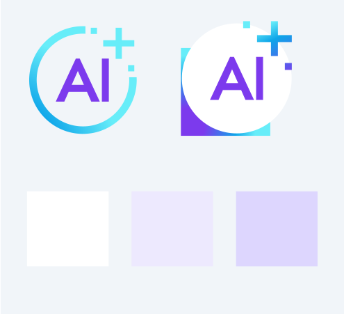
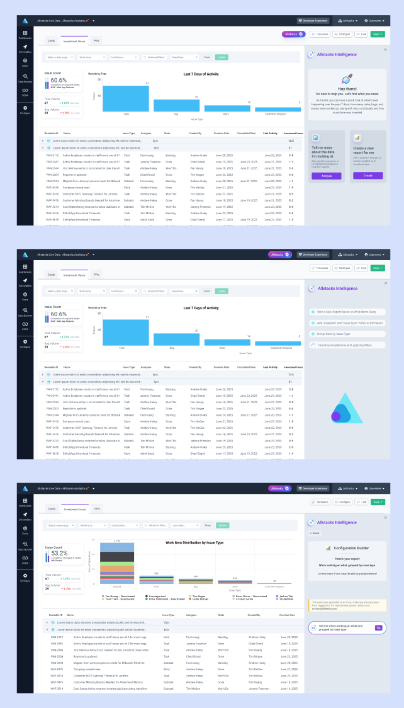

AI-Powered Intelligence Platform
Engineering teams leaders struggle to connect their teams technical work to business outcomes. Time-consuming manual reports and navigating complex dashboards creates barriers to turn development metrics into meaningful strategic decision.
We launched an AI configuration builder that enables to generate custom reports through a speech-based LLM interface, transforming reporting from a manual task into a conversational experience. In addition, we developed AI-generated summaries that interpret dashboards into quick actionable insights. This success secured investment funding and enabled hiring of 3 additional engineers, driving accelerated product development.
I led the UX design and research for AIlstacks' new AI-powered intelligence features, collaborating across Product, Engineering, and Business Intelligence teams to create conversational reporting tools that bridge the gap between technical metrics and business strategy.
My role encompassed user research, interface design for AI interactions, and designing intuitive workflows for complex AI-generated insights. I worked closely with ML engineers to ensure AI outputs were presented in user-friendly formats that drive actionable decisions, while maintaining trust and transparency in AI recommendations.
The AI intelligence features launched successfully in Q2 2025.
The
platform reduced report generation time by 55%. This success became central
to securing investment funding that enabled hiring 3 additional engineers.
My design process focused on understanding how engineering leaders currently consume and act on data, then designing AI interfaces that feel natural and trustworthy. The process emphasized rapid prototyping of conversational interfaces, continuous validation with real users, and ensuring AI transparency to build user confidence in automated insights.
Through user interviews and workflow analysis, I identified key pain points in how engineering leaders interact with business intelligence data. The insights revealed opportunities for AI to transform complex data interpretation into intuitive, conversational experiences.
In partnership with the Customer Success team, to conduct in-depth interviews with engineering managers and technical leaders to understand their reporting workflows and decision-making processes.
I also performed a detailed competitor benchmark to understand the market and highlight potential opportunity spaces. Combined with feedback from the interviews, this validated our direction and confirmed a clear path to create something more intuitive and impactful, that's why we moved forward with speech-based features.
I defined three core user personas and designed AI interaction patterns that match their natural workflow. The focus was on creating conversational interfaces that feel intuitive while handling complex business intelligence queries.
Utilizing insights gathered from previous phase, and working with the CS and business teams, I created three user personas representing different segments of our target audience who would interact with AI-powered features.
These three personas helped us empathize with users, understand their motivations, goals and pain points.

In this phase, I partnered closely with both engineering and business teams. We rapidly iterated on different interaction concepts shaped by customer and stakeholder feedback. We could move very fast by using low-fidelity that allowed us to communicate differnt ideas clarify requirements, facilitating collaboration between design and engineering.
Throght the AI configuration builder users simply describe what they want to analyze, and the AI generates the appropriate visualizations and metrics.
Natural language interfaces eliminate the learning curve for complex dashboard navigation, allowing users to query data as naturally as asking a colleague.
The AI analyzes dashboard data and generates written summaries that highlight key trends, anomalies, and actionable insights. These summaries transform complex visualizations into plain-language recommendations that engineering leaders can immediately act upon.
AI-generated summaries automatically surface the most important insights from complex datasets, eliminating hours of manual analysis and ensuring critical trends aren't missed.